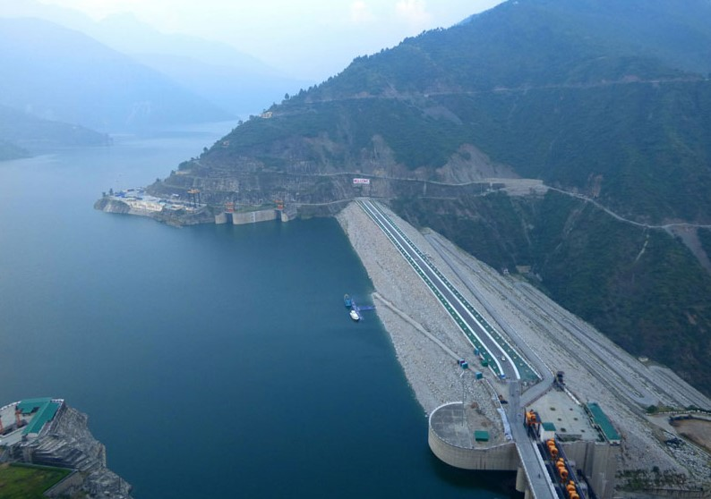
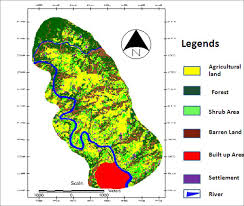
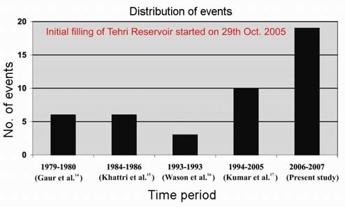
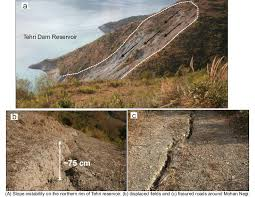

'Environmental Impacts of Tehri Dam '
 The Tehri Dam is the tallest dam in India. It is a multi-purpose rock and earth-fill embankment dam on the Bhagirathi River near Tehri in Uttarakhand, India. It is the primary dam of the THDC India Ltd. and the Tehri hydroelectric complex. Phase 1 was completed in 2006.
The Tehri Dam withholds a reservoir for irrigation, municipal water supply and the generation of 1,000 megawatts (1,300,000 hp) of hydroelectricity. The dam's 1,000 MW variable-speed pumped-storage scheme is currently under construction with expected commissioning in 2022.
The following demographs demonstrates the behaviour of the Tehri Dam:
 
Environmental effects
 The Project has identified both positive and negative impacts. Efforts were made to get full advantage of positive impacts by formulating suitable schemes.
As we know that dam is essentially an artificial wall constructed across a river which converts a running water ecosystem into a lake type ecosystem. This causes some changes in basic riverine ecosystem. Therefore, thorough studies were got conducted for the likely negative impacts of dam and its reservoir, through expert agencies. Mitigating measures, where necessary, were taken on likely negative impacts.
- Likely change in the (i) water chemistry, especially with respect to dissolved oxygen and (ii) turbidity of water.
- Likely impact on biodiversity, i.e., flora and fauna of the area.
- Likely obstruction of movements of migrating fish species during breeding season.
- Rivers carry a lot of sediment, which on construction of a dam, will be locked up behind the dam wall. The collected silt in the reservoir eats away the capacity of the reservoir. This impact of reducing the capacity and life of reservoir was studied.
- Likely impact of water accumulation on the upstream side of the dam, which causes inundation of land including forest-land.
- Since 109 villages (full or partial) and Tehri town (full) were affected and the residents were to vacate their ancestral homes and agricultural fields, a scheme was prepared, to resettle these people, with the idea to improve their living standard, keeping their social bonds intact.
- Likely problem of water-logging and salinity of the land in the command area.
Measures that were taken to Prevent Ecological Impacts
- Compensatory Afforestation : Forest land of 4193.813 ha. were diverted for construction of Tehri Dam Project and Koteshwar Project (in the downstream of Tehri Project). This forest-land included the land used in construction of Project, Project colonies, resettlement colonies and filling of reservoir. Against this, Project has completed the compensatory afforestation in an area of 4586.07 ha. in Lalitpur and Jhansi District. In addition, for 1358.20 ha. forest-land diverted in second phase for rural resettlement, the compensatory afforestation has been carried out in 2716.40 ha. of degraded forest-land of Khanpur forest range in Haridwar District.
- Catchment Area Treatment : In order to reduce soil erosion (for reducing sedimentation in the reservoir), the Tehri Project had completed the Cathcment Area Treatment (CAT) in the entire degraded catchment, in areas of 'High' and 'Very High' erosion class. The total degraded area treated is 52,204 ha. (including 44,157 ha. of forest land and the 8047 ha. of agricultural land). The CAT works included the works of afforestation, soil conservation, treatment of agriculture land, farm forestry, horticulture etc. The main objective of CAT works was to check soil erosion and resultant siltation in the reservoir.
- Command Area Development : Command Area Development Plan had been implemented by the Irrigation Departments of the State Governments of Uttarakhand and U.P. In order to mitigate the likely problem of water-logging and salinity, the network of field channels and drains were developed. The canal networks are utilized to irrigate 2.7 lac ha. additional area as well as stabilize existing irrigation area in 6.04 lac ha.
- Flora : In CAT works, the species as recommended by Botanical Survey of India (BSI), based on their flora study of the area, have been planted. A Botanical Garden in an area of 14.28 ha. has also been established and plantation of special species coming under submergence has been completed, so as to preserve important flora of the region.
- Fauna : Faunal studies were got conducted through Zoological Survey of India (ZSI), for fauna affected due to formation of reservoir. As per ZSI studies there will be no adverse impact on mammals, Aves (Birds), Reptiles (Snakes and Lizards), Ambhibia (Frogs & Toads) and Pisces (Fresh Water Fishes) due to proposed reservoir except on Tor-Putitora (Mahseer Fish).
- Water Quality Maintenance : The water quality modeling study had been carried out, which concluded that no specific measures are required and there would be no adverse effect on the water quality due to impoundment. However, the work on water quality monitoring on Tehri Reservoir, both upstream and downstream is being carried out at 5 monitoring stations. The water quality study also concluded that Dissolved Oxygen (D.O.) and Biological Oxygen Demand (BOD) in whole of reservoir are expected to remain within permissible limits desired for drinking water resources.
- Green Belt : A green Belt have been planned to be created along the rim of the reservoir between 850 m above MSL and 1050 m above MSL. The idea for developing the green belt is to check soil erosion and resultant siltation of the reservoir; to protect and regenerate the vegetation in the rim area; to increase the natural beauty of the landscape.
- Impact on Human Health : A comprehensive study of the potential health impacts of Tehri dam was conducted. National Malaria Eradication Programme (NMEP) and Malaria Research Centre (MRC) carried out detailed field investigations of the area. Action-plan for preventive measures is being implemented. Dust pollution in project area were kept under control by regular sprinkling of water. Dust pollution levels were also monitored at the project site and habitat area by conducting the study on the samples so collected.
Original Credits: Article by the team at IIT Roorkee Dated : February 4, 2008
 by Ananay Gupta © All Rights Reserved 2021
by Ananay Gupta © All Rights Reserved 2021